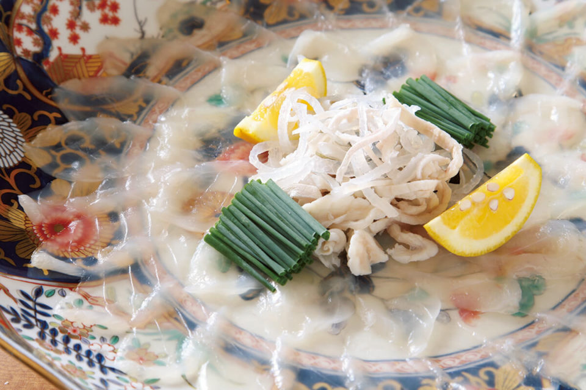
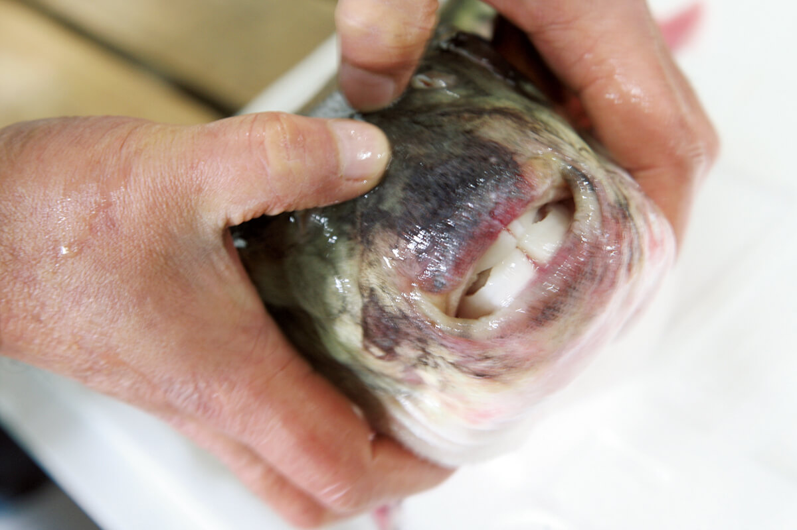
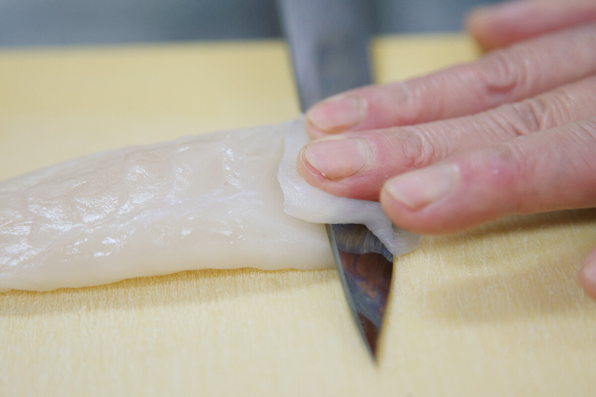
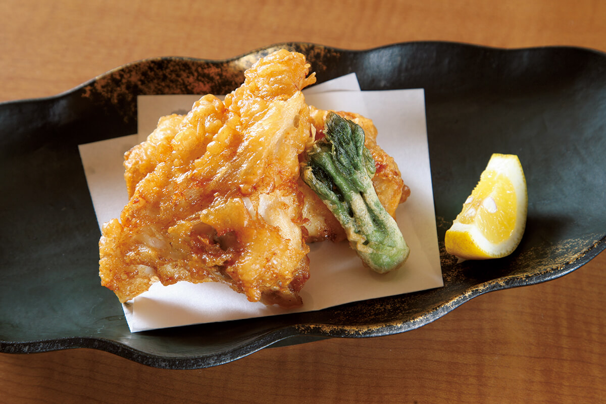
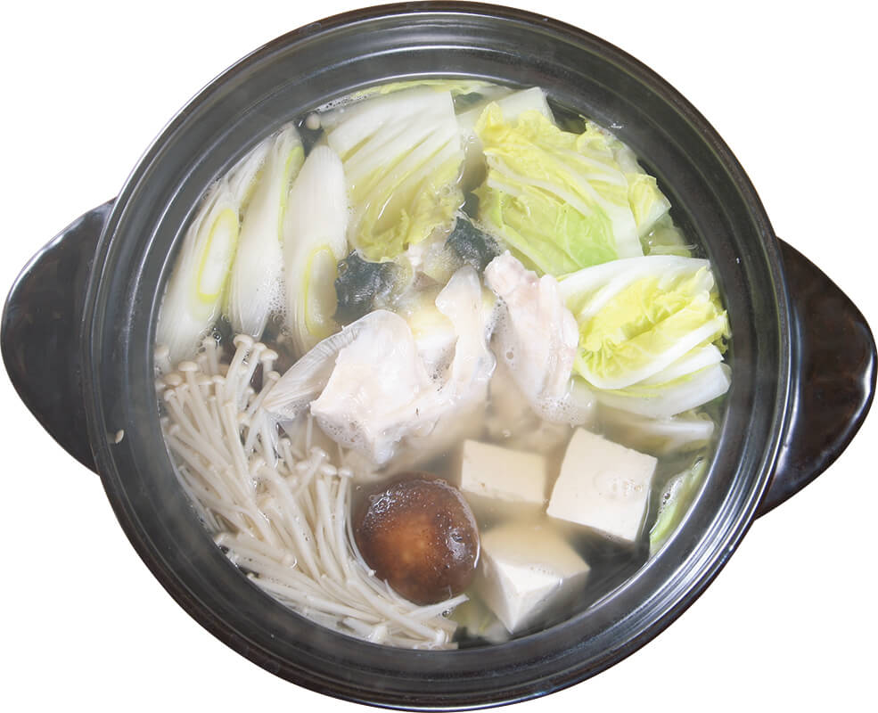
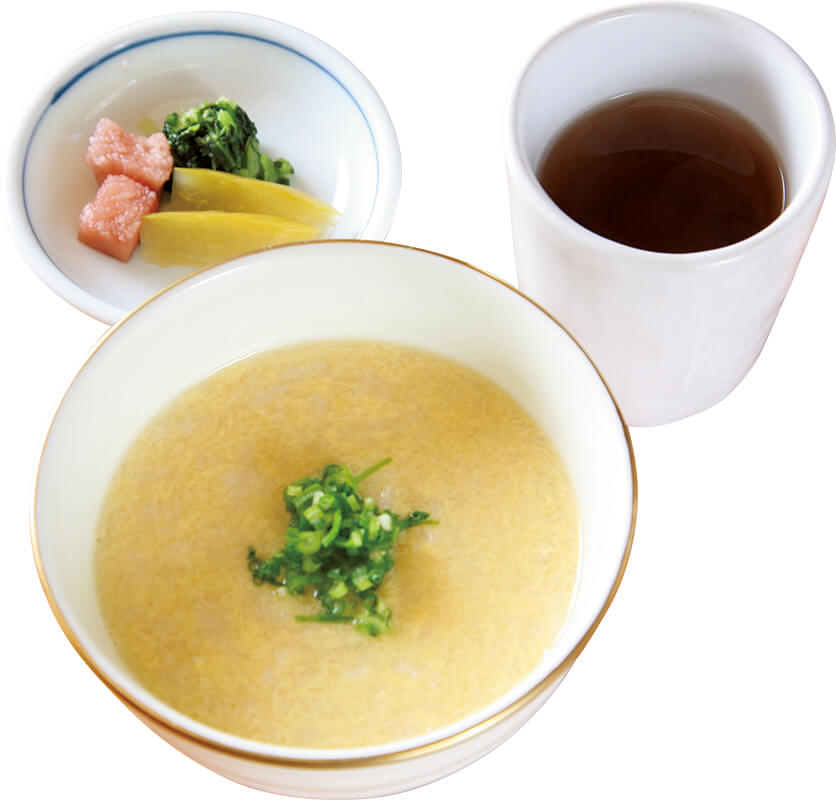

Префектура Оита · Усуки · еда
«Ямадая» в Усуки: за фугу туда, где её ловят

Самую известную фугу Японии принято связывать с Симоносэки, но знатоки давно выбрали другое место: небольшой город Усуки в префектуре Оита. Ресторан «Ямадая» работает здесь больше ста лет, и ради его фугу стоит проделать путь до самого побережья.
Место
Фугу вкуснее там, где её ловят
Главным центром фугу в Японии обычно называют Симоносэки в префектуре Ямагути, но по улову лидеры меняются. С 2011 по 2015 год больше всех фугу ловила префектура Исикава, в 2016 году первое место занял Хоккайдо, а по выращенной рыбе первенство держит Нагасаки.

Среди всех этих мест у любителей фугу есть явный фаворит: Усуки на восточном побережье префектуры Оита. Город стоит у пролива Бунго, где ловят тигровую фугу, торафугу, которую называют королевой этой рыбы. Благодаря такому соседству хорошую фугу здесь едят и вкуснее, и дешевле, чем где-либо ещё.
Ресторанный критик из Токио, которая рассказала об этом месте, признаётся, что долго не понимала, за что любят фугу. Тонкие ломтики красивы, но вкус казался ей бледным, а хрустящая текстура чем-то вроде фокуса без содержания. Только попробовав фугу в разных уголках страны, она поняла: это еда запада Японии. Ценители едут за ней туда, где её ловят, потому что именно там за долгие годы сложились правила, как выбирать рыбу и как её готовить.

В Усуки около двадцати ресторанов фугу, больших и маленьких, и почти все берут рыбу у одного оптовика. С 1 апреля по 20 августа ловить дикую фугу запрещено, но качество выращенной рыбы заметно выросло, и вкусную фугу здесь подают круглый год. Выращенная фугу к тому же стоит вдвое дешевле дикой, а то и меньше. Весенняя фугу хороша для праздничного застолья не меньше зимней.
Ресторан
«Ямадая»: от рыбной лавки к знаменитому имени

Впервые критик пришла в «Ямадая» вместе со знакомым из местных гурманов. Имя «Ямадая» хорошо знают и в Токио: ресторан сети в районе Ниси-Адзабу к 2019 году девять лет подряд получал три звезды гида Michelin.
Главный ресторан в Усуки открылся в 1905 году как рыбная лавка. В первые годы эпохи Сёва, которая началась в 1926 году, второе поколение семьи превратило её в японский ресторан, где главной стала фугу. Третье и четвёртое поколения продолжили дело и открыли филиалы в городе Оита и в токийских районах Ниси-Адзабу и Маруноути.
Чем угостят в таком месте? Знакомый предупредил: «Для нас приготовили дикую фугу, но тут всё зависит от конкретной рыбы». От этих слов аппетит только разыгрался.
Обед
От саси до дзосуй

Вход в духе старинного рётэя сначала настораживает, но в отдельных комнатах спокойно, а официантки в кимоно держатся приветливо и просто. Обед идёт по порядку: закуски, фугу-саси, караагэ, фугу-тири. Среди закусок попадается французская куриная галантина, караагэ похоже на жареные спринг-роллы: в каждом блюде видна выдумка повара. Чуть толстоватые ломтики саси наполняют рот вкусом, стоит их прикусить.
Отдельного рассказа заслуживает финальный дзосуй, рисовая каша на бульоне. Котелок уносят на кухню, бульон процеживают, добавляют рис, снимают с огня, вливают взбитое яйцо и перемешивают. На вид это обычная каша с яйцом, но во рту чувствуется аромат фугу и нежная текстура яйца, и вместе получается очень изысканное блюдо.

«Сегодня рыба была отличная», заметил знакомый. Бывает рыба лучше, бывает хуже, и в этом тоже примета дикой фугу.
Хозяйка
Дикая или выращенная
Хозяйка ресторана в четвёртом поколении говорит, что разница между дикой и выращенной фугу очень тонкая: заметить её можно, только много раз попробовав обе.
«Однажды гость съел дикую фугу и попросил ещё немного. Дикой больше не было, и мы, предупредив его, подали выращенную. Он удивился и сказал: „Пожалуй, без сравнения рядом эту разницу и не заметишь“. У дикой и у выращенной фугу свои достоинства»
хозяйка «Ямадая»
Фугу бывает разной: от недорогой выращенной до дорогой дикой. Есть её там, где её ловят, значит учиться понимать её цену. Так еда становится культурой, которую можно передать дальше. В 2019 году обеденный мини-курс из фугу стоил 7000 иен, вечерние курсы 11 000, 12 000 и 15 000 иен.
«Ямадая», главный ресторан в Усуки
- Адрес
- префектура Оита, Усуки, Минатомати-Хондори, 5
- Телефон
- +81 972-62-9145
- Часы работы
- 11:30–13:30 (последний заказ), 17:00–19:30 (последний заказ)
- Выходные
- нерегулярно
- Цены / Вход
- обед, только мини-курс из фугу 7000 иен; вечер, курсы из фугу 11 000, 12 000 и 15 000 иен
Фото: Мунэаки Маэда.